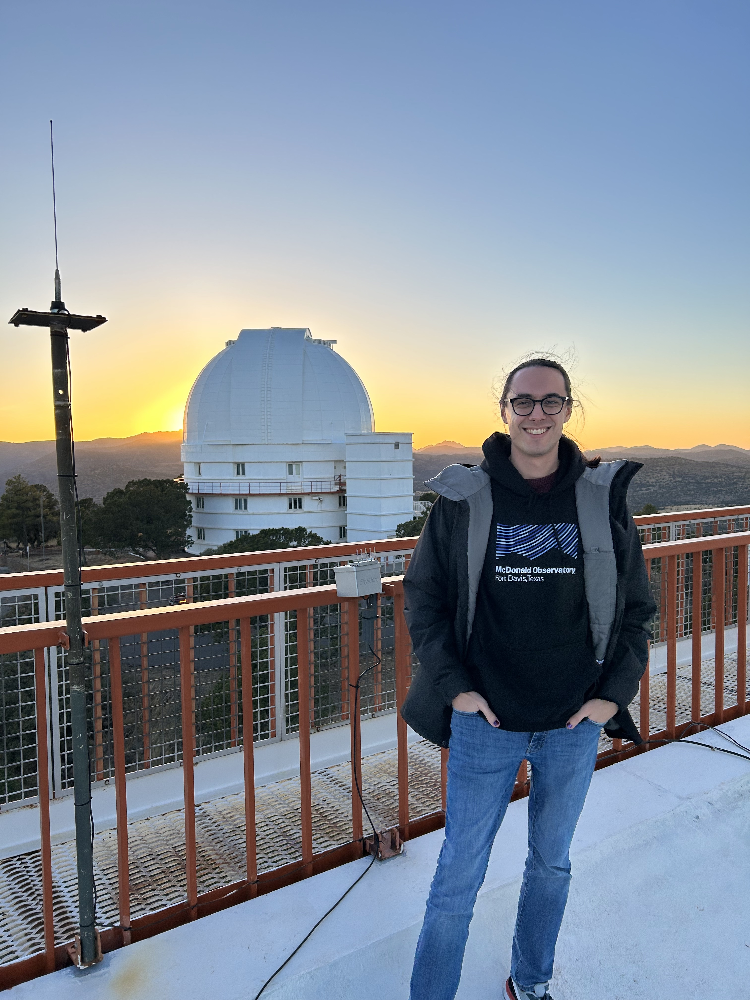

CV and Highlights
EducationJonathan on an observing run at McDonald Observatory in 2023.
| Degree | University | Advisor(s) | Date |
|---|---|---|---|
| PhD, Astronomy | Texas A&M University | Dr. Jonelle Walsh | August 2022 |
| MS, Astronomy | Texas A&M University | Dr. Kim-Vy Tran | May 2019 |
| BS, Physics | The University of Texas at Dallas | Dr. Lindsay King & Dr. Michael Kesden | May 2016 |
Positions Held
| Guarini Dean's Postdoctoral Fellow in Physics and Astronomy | Dartmouth College | 2023–present |
| Postdoctoral Research Associate | Texas A&M University | 2022–2023 |
First-Author Publications
Teaching
| ASTR 122: Special Topics: Ethical Astronomy | Lecturer, Dartmouth College | Fall 2024 |
| ASTR 116: Galactic Systems | Guest Lecturer, Dartmouth College | Spring 2024 |
| ASTR 2/3: Exploring the Universe | Guest Lecturer, Dartmouth College | Summer & Fall 2023 |
| ASTR 102: Observational Astronomy | Instructor of Record, Texas A&M University | 2017–2018 |
Honors, Grants, & Awards
| PI: Small Grants Program, College of Science Diversity Committee | Texas A&M University | 2022 |
| PI: Physics & Astronomy Climate & Diversity Committee | Texas A&M University | 2022 |
| STEM Columbia Crew Memorial Scholarship | Texas Space Grant Consortium | 2014 |
| Academic Excellence Scholarship | The University of Texas at Dallas | 2012 |
Service & Outreach
| Graduate Academia Survival Program, Dartmouth College, co-founder & mentor | 2024– |
| AAS CSMA Astronomy Poverty Survey, survey design & analysis lead | 2023– |
| Physics & Astronomy Diversity & Equity Committee, Dartmouth College | 2023– |
| GEMS: Gender Minorities in Physics & Astronomy at Dartmouth College, organizer | 2023– |
| Gateway to Graduate School, founder & coordinator | 2022–2023 |
| Texas A&M Astronomy Graduate Student Representative | 2021–2022 |
| Mentoring and Advising Graduates in an Inclusive Community (MAGIC), co-founder & mentor | 2019–2022 |
| Letters to a Pre-Scientist, pen pal | 2018–2020 |
| Astronomy on Tap Bryan/College Station (AoT BCS), organizer | 2018–2023 |
| Discover, Explore, & Enjoy Physics and Engineering (DEEP), mentor | 2017–2021 |
| UT Dallas Society of Physics Students, secretary & vice president | 2013–2016 |